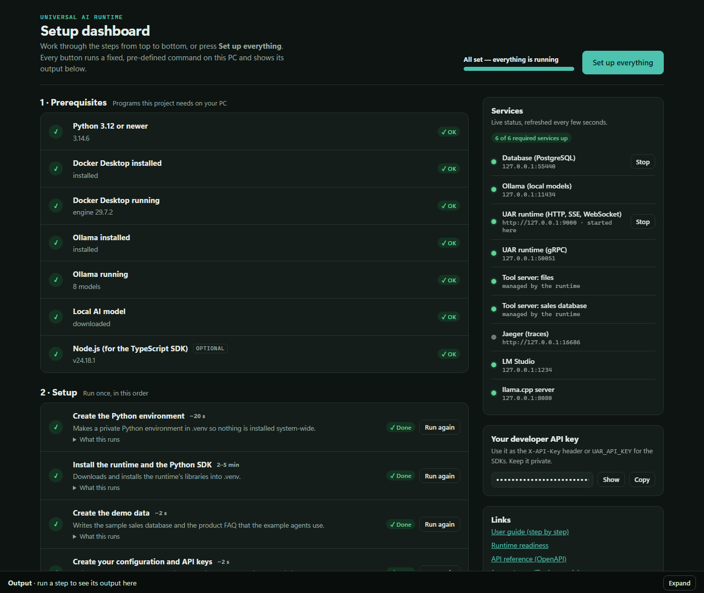

Before you start
Check that your PC meets these requirements. Setup takes about 30–45 minutes, mostly spent waiting for downloads.
| You need | Details |
|---|---|
| Windows 10 or 11, 64-bit | macOS and Linux also work; use setup.sh instead of setup.cmd. |
| Memory | 16 GB recommended (8 GB minimum). The AI model and Docker both use memory. |
| Disk space | About 15 GB free: Docker Desktop, the AI model (~2 GB), and libraries. |
| Internet | For downloading programs and the AI model. UAR itself runs entirely on your PC. |
| Administrator rights | Windows will ask you to approve the installers. |
| Virtualisation enabled | Docker Desktop needs it. It is on by default on most PCs. If Docker says it is off, turn it on in your PC's BIOS settings (search your PC model plus "enable virtualization"). |
Setup
Install Python
Python runs the setup dashboard. Open PowerShell (press Start, type PowerShell, press Enter) and paste:
winget install -e --id Python.Python.3.13
Or download it from python.org/downloads. In the installer, tick "Add python.exe to PATH" before clicking Install.
"Successfully installed". Close PowerShell and open a new one, then run py --version. It should print Python 3.13.x (3.12 or newer is fine).
Get the project folder
Copy the Universal-AI-Runtime folder onto the new PC. A short path works best, for example C:\UAR.
- From a ZIP file: right-click it, choose Extract All…, and pick
C:\UAR. - From a USB drive or network share: copy the whole folder.
- From a Git repository (once it has been published):
git clone <repository-url> C:\UAR.
Avoid folders that OneDrive syncs, such as Desktop or Documents. Syncing interferes with the files the setup creates.
Inside the folder: setup.cmd, README.md, and folders such as runtime, docs and setup-dashboard.
Open the setup dashboard
In the project folder, double-click setup.cmd. A black window opens and your browser shows the dashboard.

It runs the dashboard. Closing it stops the dashboard, and also stops the runtime if you started it from the dashboard.
Open http://127.0.0.1:7070/ yourself. The same address is printed in the black window.
Click More info and then Run anyway. This appears for scripts copied from another computer.
Install the missing programs (dashboard section 1)
Section 1 · Prerequisites lists what UAR needs. Each row shows ✓ OK or Needed. For each row marked Needed, click its button:
| Row | Click | What happens |
|---|---|---|
| Docker Desktop installed | Install | Installs Docker Desktop, which runs the database. Approve the Windows prompt. It may ask you to restart your PC; do so, then double-click setup.cmd again. |
| Docker Desktop running | Start Docker | Opens Docker Desktop. On first start, accept its terms. You can skip signing in. Wait until it says Engine running (1–2 minutes). |
| Ollama installed | Install | Installs Ollama, which runs AI models on your PC. |
| Ollama running | Start Ollama | Starts it in the background (a llama icon appears in the taskbar tray). |
| Local AI model | Download | Downloads the small default model (about 2 GB). "Set up everything" also does this. |
| Node.js (optional) | Install | Only needed for the JavaScript/TypeScript SDK and its tests. |
Every row in section 1 turns green (✓ OK). Node.js may stay "Optional". The page updates itself; you don't need to refresh.
Accept. Docker uses the Windows Subsystem for Linux. If it asks you to run wsl --update, open PowerShell as administrator, run it, then start Docker Desktop again.
Click “Set up everything”
This is the green button at the top right. It runs the setup steps in order and skips any already done. The Output panel at the bottom shows progress as it goes. You can also run the steps one by one with their own Run buttons.
| Step | What it does | Time |
|---|---|---|
| Create the Python environment | A private folder (.venv) for UAR's libraries, so nothing else on the PC changes. | ~20 s |
| Install the runtime and Python SDK | Downloads and installs the libraries. | 2–5 min |
| Create the demo data | A sample sales database and a product FAQ used by the example agents. | ~2 s |
| Create your configuration and API keys | Your settings file and private keys, stored in the .local folder. | ~2 s |
| Download the local AI model | Skipped if you already downloaded it in step 4. | 1–10 min |
| Start the database | PostgreSQL in Docker. Its data is kept between restarts. | ~30 s |
| Check the configuration | Confirms the settings are valid. | ~2 s |
Two optional steps below that list are only needed for specific uses: Build the TypeScript SDK and Build the container image.
The Output panel ends with == OK: Check the configuration, and every step in section 2 shows ✓ Done. The progress bar at the top says Setup complete — start the runtime.
Click its Output button and read the last lines. Most failures are a download interrupted by the network (click Run again) or Docker not running yet (start it in section 1, then run again). See If something goes wrong.
Start the runtime (dashboard section 3)
Click Start on “A · Start the runtime on this PC”. You can also use Start next to UAR runtime in the Services panel. The runtime is ready in about 10 seconds.
In the Services panel, 6 of 6 required services up, and the top bar says All set — everything is running. The Output panel shows the runtime's log, ending with Uvicorn running on http://127.0.0.1:9000.
If you ran Build the container image, you can use Start the runtime in Docker instead. That mode also starts Jaeger, which shows a timeline of every request at 127.0.0.1:16686. Run only one of the two at a time: both use port 9000.
Test that everything works (dashboard section 4)
Click Run test on End-to-end check. It sends real requests to your running runtime and checks 27 things: answers from the AI model, streaming, all connection types, security rules, file and database tools, a complete agent run, the dry-run preview and metrics.
After 1–2 minutes the Output panel ends with 27/27 checks passed, and the row shows ✓ Passed.
Other tests you can run from the same section:
| Test | Checks | Expected |
|---|---|---|
| Main automated test suite | About 100 tests of security, recovery after crashes, routing, tools and agents. Needs only the database; it uses built-in fake models. | 103 passed |
| Python SDK tests | The Python library, against a built-in mock server. | 10 passed |
| TypeScript SDK tests | The JavaScript/TypeScript library (build it in section 2 first). | pass 9 |
| Container sandbox test | That tools run locked down inside a container (build the image first). | 1 passed |
| Tests with real AI models | Ollama, and LM Studio or llama.cpp if they are running. | passes; tests for servers that aren't running are skipped |
Use it
Your developer API key is in the dashboard's right-hand panel: click Copy. Programs send it with every request. Then try one of these in PowerShell, from the project folder:
Your first request:
$h = @{ 'X-API-Key' = '<paste your key>' }
Invoke-RestMethod -Method Post http://localhost:9000/api/v1/inference -Headers $h `
-ContentType 'application/json' -Body '{"model":"local:default","input":"Say hello"}'The Python example (asks a question, uses an agent, streams an answer, previews a plan):
$env:UAR_API_KEY = '<paste your key>' .\.venv\Scripts\python.exe examples\python\quickstart.py
An answer from the model with provider ollama. The example also prints the in-app assistant answering "30 days" from the product FAQ.
More: the API reference is at 127.0.0.1:9000/api/v1/openapi.json while the runtime is running. docs/user-guide.md walks through every feature with commands.
Every day after setup
Setup happens once. After a restart, getting UAR running again takes about a minute:
- Double-click
setup.cmd. - If Docker Desktop running or Ollama running is red, click its Start button and wait for it to turn green.
- If the Database service is red, click Start next to it.
- Click Start next to UAR runtime.
After updating the project files, click Run again on Install the runtime and the Python SDK, restart the runtime, and run the End-to-end check.
What the services mean
In the Services panel, is running, is a required service that is stopped, and is an optional service that is stopped.
| Service | What it is | When it is red |
|---|---|---|
| Database (PostgreSQL) | Stores agent runs, their history, the audit log and usage. Runs in Docker. | Click Start. If that fails, check that Docker Desktop is running. |
| Ollama (local models) | Runs AI models on your PC. | Click Start, or open Ollama from the Start menu. |
| UAR runtime (HTTP, SSE, WebSocket) | The main service that programs talk to, on port 9000. | Click Start. If it stays red, open the Output panel for the reason. |
| UAR runtime (gRPC) | The same service for gRPC clients, on port 50051. Starts with the runtime. | Starts and stops together with the runtime. |
| Tool server: files | Lets agents read files and write reports, only inside examples\workspace. | Starts with the runtime. If only this is red, run Create the demo data and restart the runtime. |
| Tool server: sales database | Read-only access to the demo sales database. | Same as above. |
| Jaeger (traces) (optional) | A timeline view of requests; runs only in Docker mode. | Normal in "on this PC" mode. |
| LM Studio, llama.cpp (optional) | Other local model apps that UAR can also use. | Normal if you don't use them. |
If something goes wrong
| What you see | What to do |
|---|---|
Double-clicking setup.cmd says Python is required | Do step 1, close the window, and double-click again. If Python is installed but not found, reinstall it with "Add python.exe to PATH" ticked. |
| The dashboard says it can't reach the setup dashboard | Its black window was closed. Double-click setup.cmd again; the open page reconnects by itself. |
| “Docker Desktop running” stays red | Open Docker Desktop from the Start menu and wait for Engine running. If it reports that virtualisation or WSL is missing, see Before you start, then restart the PC. |
| “Install the runtime” fails | Usually a network hiccup: click Run again. Behind a company proxy, ask IT for the proxy settings for Python's pip. |
| “Download the local AI model” is slow | It is about 2 GB. Leave it running; the Output panel shows progress. |
| The runtime stops right after starting: “port 9000 is in use” | Another runtime is already running, often the Docker one. Stop it in the Services panel, then start again. |
| The end-to-end check fails on an inference step | Check that Ollama is green and the model row in section 1 is ✓. The first answer after starting Ollama can take 10–20 seconds while the model loads. |
| Anything else | Open the Output of the failed step; the last lines explain the error. docs/runbooks/local-development.md lists more fixes. |
Setup without the dashboard
The dashboard runs these commands for you. If you prefer typing them, run them in PowerShell from the project folder.
Show the commands
Programs (skip any you already have), then restart the PC if Docker asks:
winget install -e --id Docker.DockerDesktop winget install -e --id Ollama.Ollama winget install -e --id OpenJS.NodeJS.LTS
Setup (same as “Set up everything”):
py -3 -m venv .venv .\.venv\Scripts\python.exe -m pip install --upgrade pip .\.venv\Scripts\python.exe -m pip install -e ".[dev]" -e sdks\python .\.venv\Scripts\python.exe scripts\make_fixtures.py .\.venv\Scripts\python.exe scripts\bootstrap_local.py ollama pull granite4:latest docker compose -f deploy/docker/compose.yaml up -d postgres .\.venv\Scripts\uar.exe check-config --config .local\uar.yaml
Start the runtime (leave this window open), then test from a second window:
.\.venv\Scripts\uar.exe serve --config .local\uar.yaml
.\.venv\Scripts\python.exe scripts\smoke_test.py .\.venv\Scripts\python.exe -m pytest
Stop or remove UAR
| To | Do this |
|---|---|
| Stop the runtime | Stop next to UAR runtime in the dashboard, or close the black window. |
| Stop the database | Stop next to Database. Your data is kept. |
| Delete all data and start fresh | In PowerShell: docker compose -f deploy/docker/compose.yaml --profile full down -v. This permanently deletes the database, including runs and audit history. |
| Get new API keys | In PowerShell: .\.venv\Scripts\python.exe scripts\bootstrap_local.py --force. Old keys stop working. |
| Remove UAR completely | Stop everything, delete the data as above, then delete the project folder. Uninstall Docker Desktop, Ollama, Node.js and Python from Windows Settings → Apps if nothing else uses them. |
Is the dashboard safe?
- It is only reachable from this PC (
127.0.0.1), not from your network. - Other websites open in your browser cannot use it. Each run of the dashboard has a secret session code that only its own page can read, and requests from other websites are refused.
- It can only run the fixed steps you see on the page. It never runs commands typed into a web page. Click What this runs on any step to see its exact commands.
- Installers show the normal Windows permission prompt, so you approve each one.
- Your API keys stay in
.local\credentials.envon this PC. Treat them like passwords.